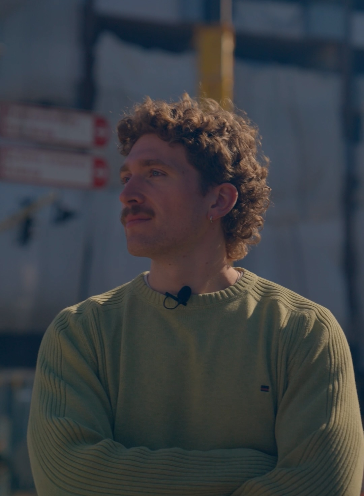

Foto van De Klokkenhof
De Gekraakte Flat
Een vijfdelige verhalende podcast over wonen, kraken en de toekomst van Amsterdam.

Amsterdam · Journalistiek · Audio
Journalist & podcastmaker
Een vijfdelige verhalende podcast over wonen, kraken en de toekomst van Amsterdam.
Vervang dit door je volgende productie.
Hier kan een reportage, interview of podcast komen.
Over
Ik ben Pietro Tramontin, freelance journalist en podcastmaker uit Amsterdam. Mijn werk verscheen onder meer bij Het Parool en DPG Media.
Ik studeerde Journalistiek en Media aan de Universiteit van Amsterdam en werk aan podcasts, interviews, reportages en audiodocumentaires.
Contact